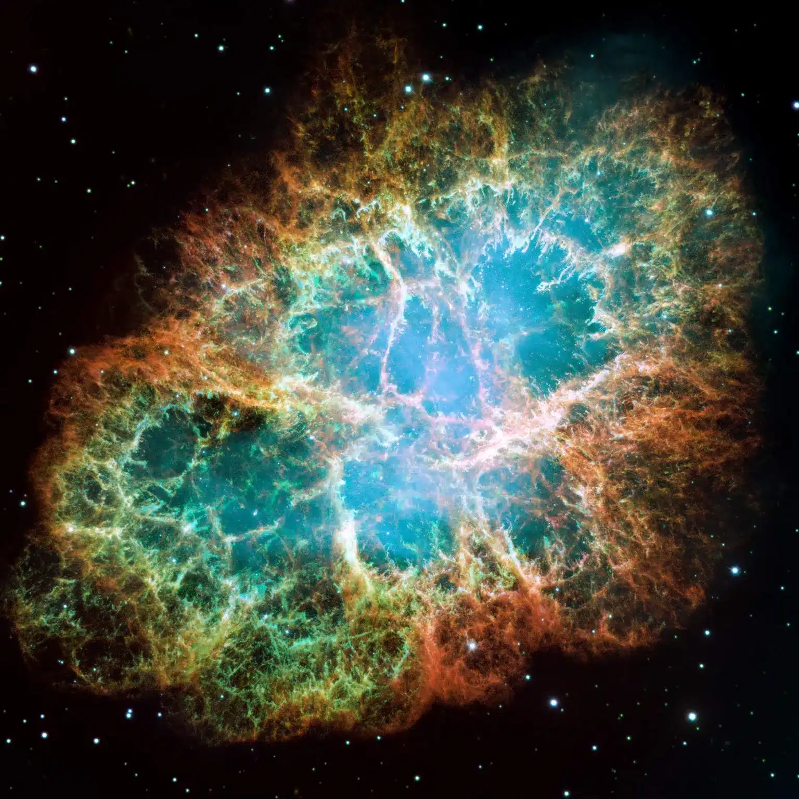
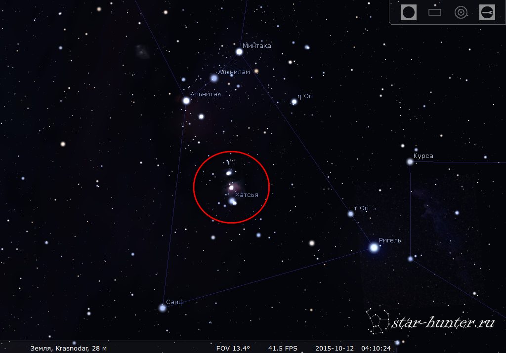

За пределами видимости
Самые интересные объекты Вселенной
Самые интересные объекты Вселенной

Первая в истории фотография чёрной дыры (M87) была получена в 2019 году. Её масса в 6,5 миллиардов раз больше массы Солнца. Гравитация настолько сильна, что даже свет не может покинуть её пределы.

Пульсары — это быстро вращающиеся нейтронные звёзды, которые излучают строго периодические радиоимпульсы. Самый знаменитый пульсар находится в Крабовидной туманности и делает 30 оборотов в секунду.

Это ближайшая к Земле область звёздообразования (всего 1300 световых лет). Внутри неё рождаются новые звёзды, а её яркость видна даже невооружённым глазом на зимнем небе.

Проксима Центавра b — ближайшая к нам экзопланета, находится всего в 4,2 световых годах. Она вращается вокруг красного карлика и может иметь жидкую воду на поверхности.